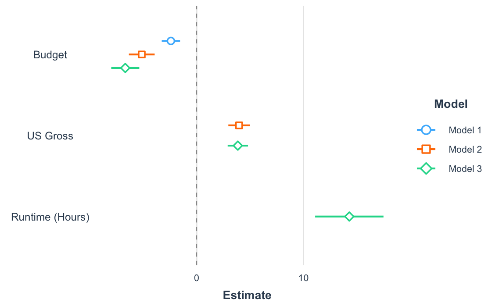
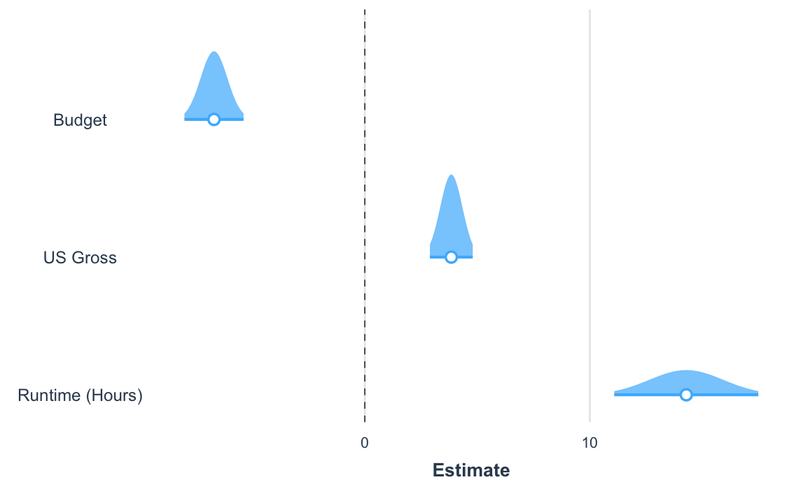
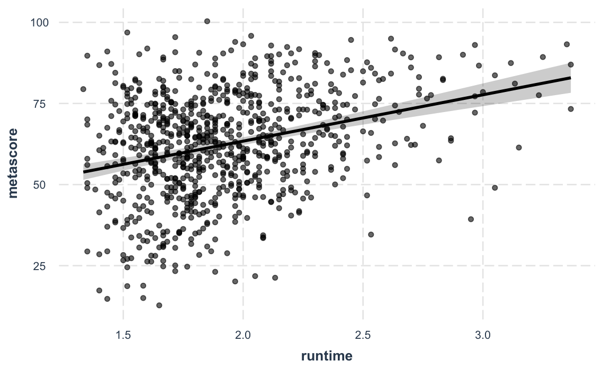

This package consists of a series of functions created by the author (Jacob) to automate otherwise tedious research tasks. At this juncture, the unifying theme is the more efficient presentation of regression analyses. There are a number of functions for other programming and statistical purposes as well. Support for the survey package’s svyglm objects as well as weighted regressions is a common theme throughout.
Notice: As of jtools version 2.0.0, all functions dealing with interactions (e.g., interact_plot(), sim_slopes(), johnson_neyman()) have been moved to a new package, aptly named interactions.
Installation
For the most stable version, simply install from CRAN.
install.packages("jtools")If you want the latest features and bug fixes then you can download from Github. To do that you will need to have devtools installed if you don’t already:
install.packages("devtools")Then install the package from Github.
devtools::install_github("jacob-long/jtools")To see what features are on the roadmap, check the issues section of the repository, especially the “enhancement” tag. Closed issues may be of interest, too, since they may be fixed in the Github version but not yet submitted to CRAN.
Usage
Here’s a synopsis of the current functions in the package:
Console regression summaries (summ())
summ() is a replacement for summary() that provides the user several options for formatting regression summaries. It supports glm, svyglm, and merMod objects as input as well. It supports calculation and reporting of robust standard errors via the sandwich package.
Basic use:
#> MODEL INFO:
#> Observations: 831 (10 missing obs. deleted)
#> Dependent Variable: metascore
#> Type: OLS linear regression
#>
#> MODEL FIT:
#> F(3,827) = 26.23, p = 0.00
#> R² = 0.09
#> Adj. R² = 0.08
#>
#> Standard errors: OLS
#> --------------------------------------------------
#> Est. S.E. t val. p
#> ----------------- ------- -------- -------- ------
#> (Intercept) 52.06 139.67 0.37 0.71
#> budget -0.00 0.00 -5.89 0.00
#> us_gross 0.00 0.00 7.61 0.00
#> year 0.01 0.07 0.08 0.94
#> --------------------------------------------------It has several conveniences, like re-fitting your model with scaled variables (scale = TRUE). You have the option to leave the outcome variable in its original scale (transform.response = TRUE), which is the default for scaled models. I’m a fan of Andrew Gelman’s 2 SD standardization method, so you can specify by how many standard deviations you would like to rescale (n.sd = 2).
You can also get variance inflation factors (VIFs) and partial/semipartial (AKA part) correlations. Partial correlations are only available for OLS models. You may also substitute confidence intervals in place of standard errors and you can choose whether to show p values.
summ(fit, scale = TRUE, vifs = TRUE, part.corr = TRUE, confint = TRUE, pvals = FALSE)#> MODEL INFO:
#> Observations: 831 (10 missing obs. deleted)
#> Dependent Variable: metascore
#> Type: OLS linear regression
#>
#> MODEL FIT:
#> F(3,827) = 26.23, p = 0.00
#> R² = 0.09
#> Adj. R² = 0.08
#>
#> Standard errors: OLS
#> ------------------------------------------------------------------------------
#> Est. 2.5% 97.5% t val. VIF partial.r part.r
#> ----------------- ------- ------- ------- -------- ------ ----------- --------
#> (Intercept) 63.01 61.91 64.11 112.23
#> budget -3.78 -5.05 -2.52 -5.89 1.31 -0.20 -0.20
#> us_gross 5.28 3.92 6.64 7.61 1.52 0.26 0.25
#> year 0.05 -1.18 1.28 0.08 1.24 0.00 0.00
#> ------------------------------------------------------------------------------
#>
#> Continuous predictors are mean-centered and scaled by 1 s.d.Cluster-robust standard errors:
data("PetersenCL", package = "sandwich")
fit2 <- lm(y ~ x, data = PetersenCL)
summ(fit2, robust = "HC3", cluster = "firm")#> MODEL INFO:
#> Observations: 5000
#> Dependent Variable: y
#> Type: OLS linear regression
#>
#> MODEL FIT:
#> F(1,4998) = 1310.74, p = 0.00
#> R² = 0.21
#> Adj. R² = 0.21
#>
#> Standard errors: Cluster-robust, type = HC3
#> -----------------------------------------------
#> Est. S.E. t val. p
#> ----------------- ------ ------ -------- ------
#> (Intercept) 0.03 0.07 0.44 0.66
#> x 1.03 0.05 20.36 0.00
#> -----------------------------------------------Of course, summ() like summary() is best-suited for interactive use. When it comes to sharing results with others, you want sharper output and probably graphics. jtools has some options for that, too.
LaTeX-, Word-, and RMarkdown-friendly regression summary tables (export_summs())
For tabular output, export_summs() is an interface to the huxtable package’s huxreg() function that preserves the niceties of summ(), particularly its facilities for robust standard errors and standardization. It also concatenates multiple models into a single table.
fit <- lm(metascore ~ log(budget), data = movies)
fit_b <- lm(metascore ~ log(budget) + log(us_gross), data = movies)
fit_c <- lm(metascore ~ log(budget) + log(us_gross) + runtime, data = movies)
coef_names <- c("Budget" = "log(budget)", "US Gross" = "log(us_gross)",
"Runtime (Hours)" = "runtime", "Constant" = "(Intercept)")
export_summs(fit, fit_b, fit_c, robust = "HC3", coefs = coef_names)| Model 1 | Model 2 | Model 3 | |
|---|---|---|---|
| Budget | -2.43 *** | -5.16 *** | -6.70 *** |
| (0.44) | (0.62) | (0.67) | |
| US Gross | 3.96 *** | 3.85 *** | |
| (0.51) | (0.48) | ||
| Runtime (Hours) | 14.29 *** | ||
| (1.63) | |||
| Constant | 105.29 *** | 81.84 *** | 83.35 *** |
| (7.65) | (8.66) | (8.82) | |
| N | 831 | 831 | 831 |
| R2 | 0.03 | 0.09 | 0.17 |
| Standard errors are heteroskedasticity robust. *** p < 0.001; ** p < 0.01; * p < 0.05. | |||
In RMarkdown documents, using export_summs() and the chunk option results = 'asis' will give you nice-looking tables in HTML and PDF output. Using the to.word = TRUE argument will create a Microsoft Word document with the table in it.
Plotting regression summaries (plot_coefs() and plot_summs())
Another way to get a quick gist of your regression analysis is to plot the values of the coefficients and their corresponding uncertainties with plot_summs() (or the closely related plot_coefs()). Like with export_summs(), you can still get your scaled models and robust standard errors.
coef_names <- coef_names[1:3] # Dropping intercept for plots
plot_summs(fit, fit_b, fit_c, robust = "HC3", coefs = coef_names)
And since you get a ggplot object in return, you can tweak and theme as you wish.
Another way to visualize the uncertainty of your coefficients is via the plot.distributions argument.
plot_summs(fit_c, robust = "HC3", coefs = coef_names, plot.distributions = TRUE)
These show the 95% interval width of a normal distribution for each estimate.
plot_coefs() works much the same way, but without support for summ() arguments like robust and scale. This enables a wider range of models that have support from the broom package but not for summ().
Plotting model predictions (effect_plot())
Sometimes the best way to understand your model is to look at the predictions it generates. Rather than look at coefficients, effect_plot() lets you plot predictions across values of a predictor variable alongside the observed data.
effect_plot(fit_c, pred = runtime, interval = TRUE, plot.points = TRUE)#> Using data movies from global environment. This could cause incorrect results if movies has been altered since the model was fit.
#> You can manually provide the data to the "data =" argument.
#> Warning: Removed 10 rows containing missing values (geom_point).
And a new feature in version 2.0.0 lets you plot partial residuals instead of the raw observed data, allowing you to assess model quality after accounting for effects of control variables.
effect_plot(fit_c, pred = runtime, interval = TRUE, partial.residuals = TRUE)#> Using data movies from global environment. This could cause incorrect results if movies has been altered since the model was fit.
#> You can manually provide the data to the "data =" argument.
Categorical predictors, polynomial terms, (G)LM(M)s, weighted data, and much more are supported.
Other stuff
There are several other things that might interest you.
-
gscale(): Scale and/or mean-center data, includingsvydesignobjects -
scale_mod()andcenter_mod(): Re-fit models with scaled and/or mean-centered data -
wgttest()andpf_sv_test(), which are combined inweights_tests(): Test the ignorability of sample weights in regression models -
svycor(): Generate correlation matrices fromsvydesignobjects -
theme_apa(): A mostly APA-compliantggplot2theme -
theme_nice(): A niceggplot2theme -
add_gridlines()anddrop_gridlines():ggplot2theme-changing convenience functions -
make_predictions(): an easy way to generate hypothetical predicted data from your regression model for plotting or other purposes.
Details on the arguments can be accessed via the R documentation (?functionname). There are now vignettes documenting just about everything you can do as well.
Contributing
I’m happy to receive bug reports, suggestions, questions, and (most of all) contributions to fix problems and add features. I prefer you use the Github issues system over trying to reach out to me in other ways. Pull requests for contributions are encouraged. If you are considering writing up a bug fix or new feature, please check out the contributing guidelines.
Please note that this project is released with a Contributor Code of Conduct. By participating in this project you agree to abide by its terms.
License
This package is licensed under the GPLv3 license or any later version.